Als Beispiel wird die Übertragungsfunktion eines PT1 Systems gewählt. Der Proportionalteil ist Kp und die Zeitkonstante ist T1. Ein Netzwerk aus Widerstand und Kondensator ist beispielsweise ein PT1 System.
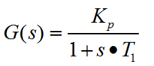
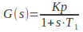
Die Übertragungsfunktion wird in einen Frequenzgang umgewandelt.
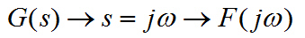
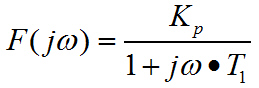
Nun will man den Realteil vom Imaginärteil trennen. Dazu wird der Nenner nach der 3. binomischen Formel erweitert.
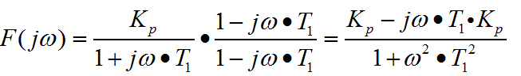
Nun wird der Realteil betrachtet:
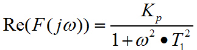
Der Imaginärteil ergibt sich zu:
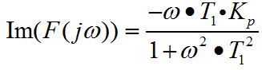
Daraus kann man Betrag und Phase berechnen
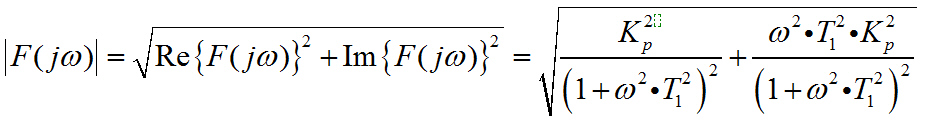
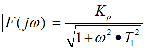
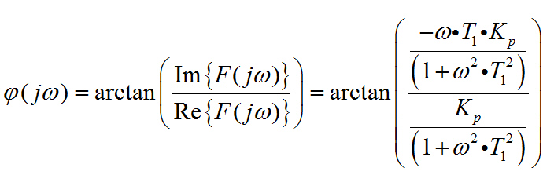
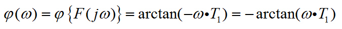
Für die Extremwerte der Kreisfrequenz ergeben sich folgende Sonderwerte
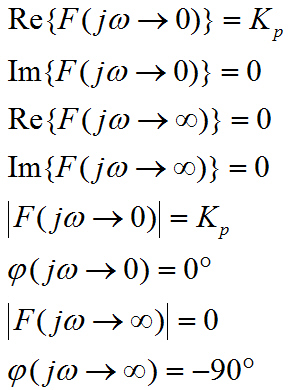
Daraus ergibt sich folgendes Nyquistdiagramm
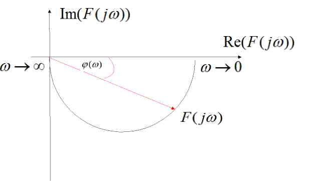
Leiten sie mit Hilfe der Widerstände und Scheinwiderstände der Wechselstromtechnik den Frequenzgang einer Reihenschaltung aus Widerstand und Kondensator her. Die Zeigerdiagramme sind in einer anderen Seite dargestellt.